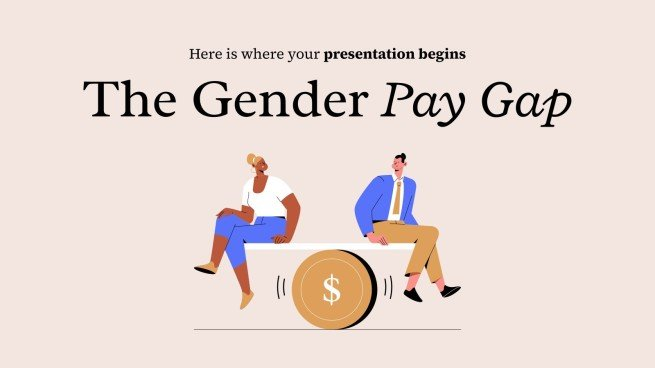
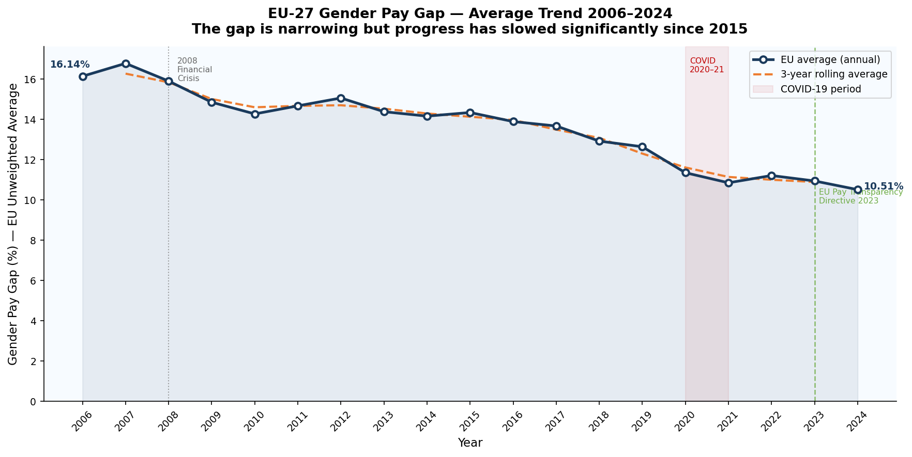
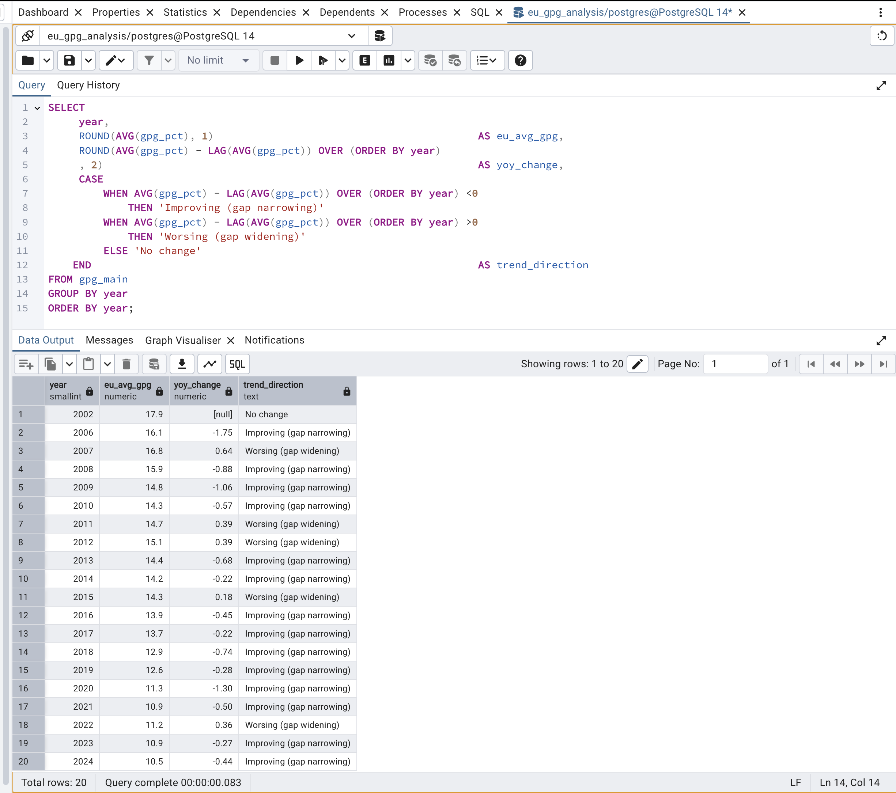
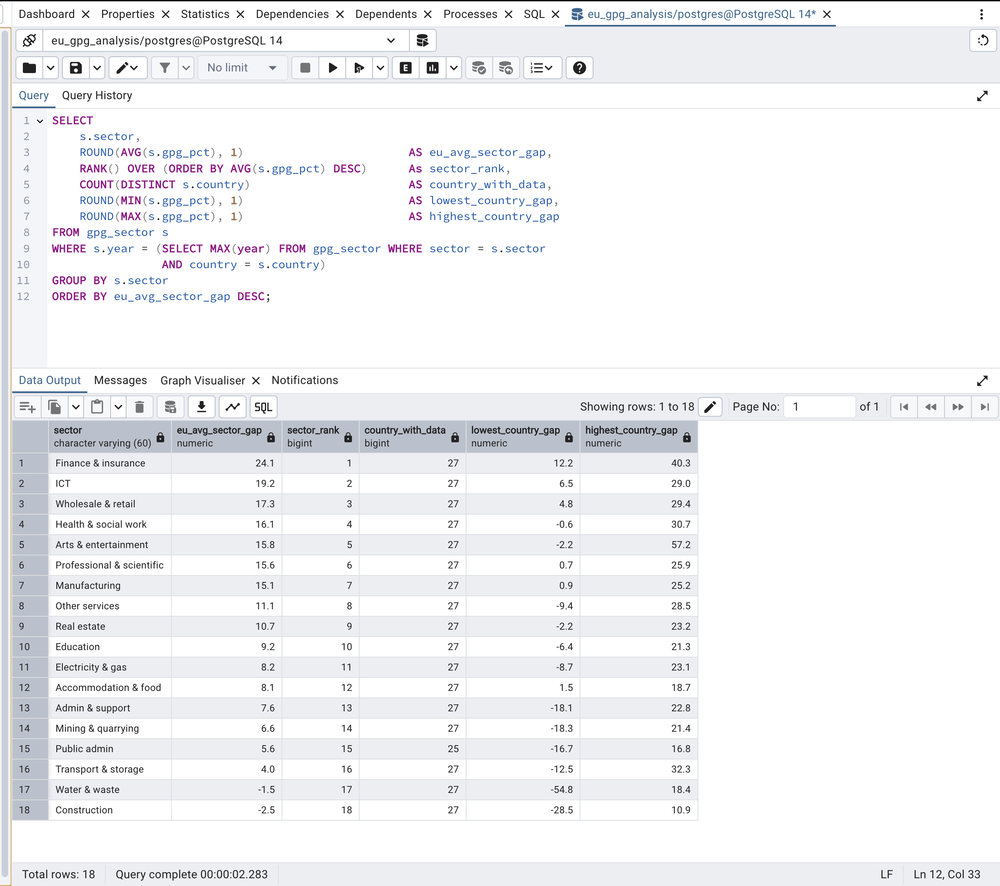
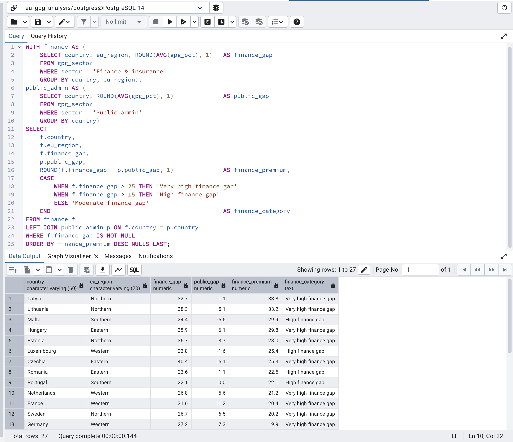
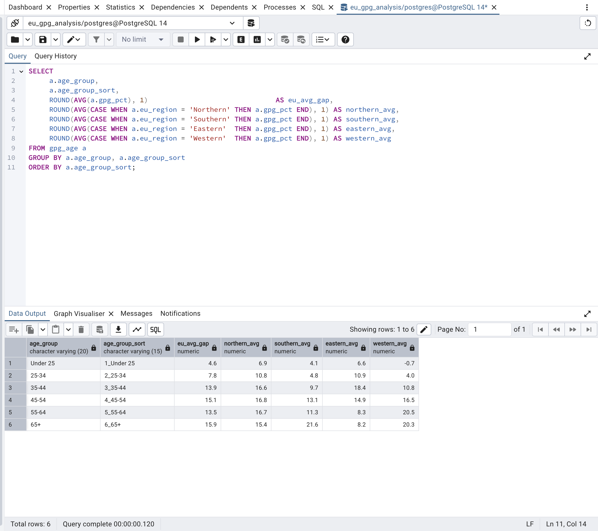
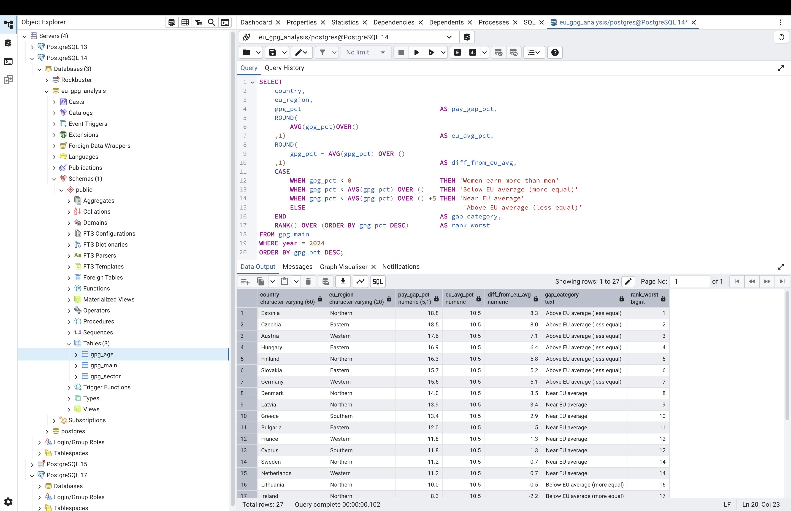
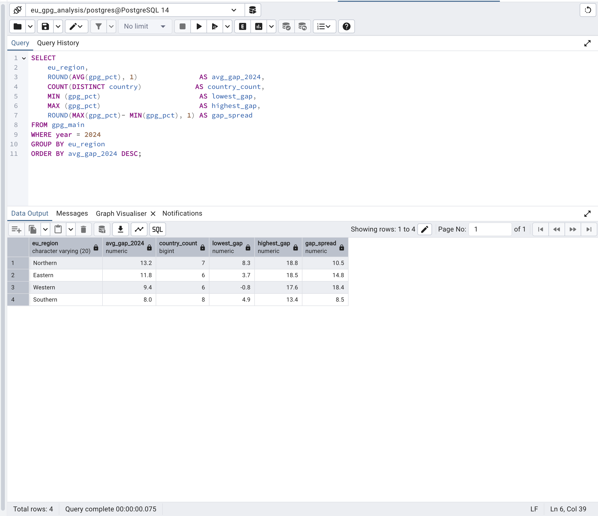
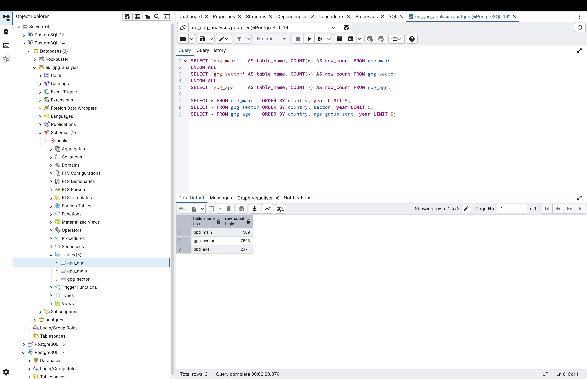
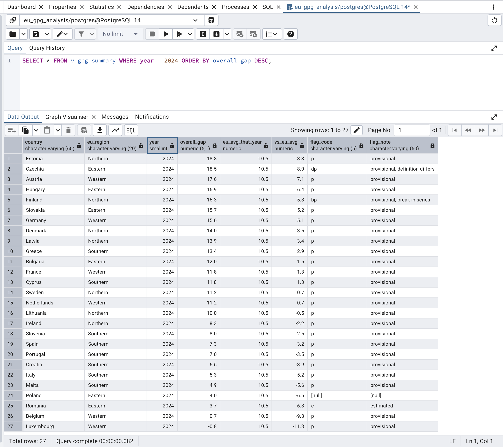

Labour Economics & Policy Analytics
EU Gender Pay Gap Analysis (2002–2024)
What does 22 years of official Eurostat data reveal about where, why, and for whom the EU pay gap persists — and what should happen next?
Is the EU pay gap actually getting better?
The EU gender pay gap is widely reported as improving. But is that decline statistically real, how fast is it happening, and what does the current pace mean for the future?
The EU unweighted average pay gap fell from 17.9% in 2002 to 10.5% in 2024 — a real, confirmed improvement. Linear regression on the annual EU average shows a slope of −0.35 percentage points per year with a p-value well below 0.05. The decline is not noise.
But the rolling 3-year average shows something important: the rate of improvement flattened significantly after 2015. The gap narrowed by roughly 5 percentage points in the first nine years of data, and by only 3.4 percentage points in the nine years since. If the post-2015 rate continues, the EU would not reach pay equality until the second half of this century.
The 2023 EU Pay Transparency Directive — which requires companies with 100+ employees to publish pay data by gender from 2026 — is the most significant policy intervention in years. Its effect will begin appearing in data from 2026 onwards.

EU average 2006–2024. Dashed orange = 3-year rolling average. The post-2015 flattening is visible in the rolling line despite continued annual improvement.

Linear regression extended forward with 95% confidence interval. At the post-2015 rate of decline, the projection line reaches zero around 2100.

SQL query using LAG() to calculate year-on-year change and CASE to classify each year as improving or worsening. Gap widened in 2007, 2011, 2012, 2015, and 2022.

Change in pay gap since 2006 per country. Spain (−8.9 pp) and Luxembourg (−9.5 pp) lead. Several countries barely moved despite 18 years of EU policy pressure.
Which industry is the biggest problem — and can we prove it?
Every EU country shows variation in pay gaps across sectors. But is Finance & insurance genuinely an outlier, or does it just look that way on a chart? And why does Public admin consistently show the smallest gap?
Across all 18 NACE industry sectors, Finance & insurance sits at the top by a margin that holds in almost every EU country. Its EU average gap of 24.1% is 13.6 percentage points above the EU overall average of 10.5%. An independent t-test comparing Finance to all other sectors combined returned a p-value far below 0.05 — this is statistically an outlier, not just visually large.
The cause is structural: a bonus culture that heavily rewards seniority (where men dominate), discretionary pay decisions with no transparency, and persistent underrepresentation of women at partner and managing-director level. Public administration sits at the bottom (5.6%) because pay is determined by grade structures that apply equally to all employees — there is no bonus discretion, no negotiation premium, and pay bands are publicly known.
The 18.5 percentage point gap between the best and worst sectors is one of the most actionable findings in this project: it shows that transparency in pay-setting is the most reliable predictor of equality.

18 sectors ranked by EU average. Colour gradient green (most equal) to red (least equal). Finance sits 13.6 pp above the EU overall average reference line.

Finance (red) vs Public admin (green) side by side for every EU country. Latvia's finance gap is 33.8 pp above its public admin gap — the largest internal contrast in the EU.
All 27 countries × 18 sectors. Finance column is dark red in almost every country row — confirming this is a structural EU-wide problem, not a handful of outlier countries. Public admin is green across almost every row.

SQL sector ranking using RANK() OVER(). Finance ranks 1st at 24.1% with data from all 27 countries. Construction ranks last at −2.5% — driven by very few women in the sector.

Two CTEs joined with LEFT JOIN to compare Finance vs Public admin per country. CASE statement classifies each country: Very high, High, or Moderate finance gap.
Is this a young workers' problem — or does it get worse with age?
If the EU pay gap were purely about different career choices, we would expect it to appear early and stay stable. Instead, the data shows something different: it nearly triples over a working lifetime. Why?
Workers under 25 experience near pay parity across the EU. The gap is small, consistent, and shows the workforce entering on broadly equal terms. By the time those same workers reach their mid-30s, the gap has nearly tripled — and it never fully recovers.
This pattern is called the motherhood penalty: the measurable earnings impact of career breaks, part-time transitions, and the unequal distribution of caring responsibilities that disproportionately falls on women during the 35–44 age band. A paired t-test comparing each country to itself — Under 25 gap versus 35–44 gap — returned a p-value far below 0.05. The jump is consistent across all 27 EU countries. It is statistically proven, not assumed.
All four EU regions show the same upward shape. Nordic countries — often held up as models of equality — still show a sharp jump at 35–44 despite strong parental leave policies. Better policy reduces the size of the penalty. No country has eliminated its shape. The gap always widens after 35.
By the time workers reach 65+, the gap has settled at 15.9% — and this translates directly into lower pension entitlements for the rest of those women's lives. The motherhood penalty does not end at retirement.

EU average pay gap at each age band. Orange gradient darkens as gap grows. The jump between 25–34 (7.8%) and 35–44 (13.9%) is the single sharpest increase — the motherhood penalty made visible.

All four EU regions follow the same upward shape. Better parental leave (Northern EU) reduces the level but not the pattern. The penalty is universal — structural, not cultural.

SQL conditional aggregation pivoting 4 regional averages into columns per age group. EU average rises from 4.6% (Under 25) to 15.9% (65+) — a 3.5× increase confirmed in structured data.

Size of the jump from Under 25 to 35–44 per country. Countries at the top of this chart are where the penalty is most acute and where targeted family policy would have the largest measurable impact.
Which countries are outliers — and what do they tell us?
Estonia (18.8%) and Luxembourg (−0.8%) sit at opposite extremes of the EU. Are these just statistical flukes — or do they reveal something important about what drives the gap?
Estonia has the highest pay gap in the EU at 18.8% — and it has held this position consistently. The cause is not discrimination in isolation: Estonia has strong occupational segregation between high-paying male-dominated sectors (ICT, finance) and lower-paying female-dominated sectors (education, health). The headline gap reflects the economy's structure. But when the regression model controls for sector and age, Estonia still shows a significant positive residual — meaning even after accounting for sector composition, the gap is larger than expected. Structure explains some of it. Not all.
Luxembourg is the only EU country with a negative pay gap (−0.8%) — meaning women earn slightly more than men on average. This is not because Luxembourg has solved gender inequality. Luxembourg's economy is dominated by financial services that attract highly-paid male expat workers from across Europe. This inflates men's average earnings in aggregate, while the domestic workforce shows a more typical pattern. The negative figure is an economic composition artefact, not a policy success.
Both outliers appear in IQR analysis as statistical outliers — sitting beyond 1.5× the interquartile range from the median. Both require individual explanation rather than being averaged into regional figures.

All 27 countries ranked for 2024. Estonia at top (18.8%), Luxembourg the only negative (−0.8%). Bars coloured by EU region — Eastern Europe red, Western green, Northern blue, Southern orange.

SQL ranking using RANK() and AVG() OVER() window functions. Each country shown alongside the EU average (10.5%) and deviation, with CASE classification: Above average, Near, or Below.

Box plots by EU region with individual country dots. Eastern Europe has the widest box — Poland (4%) and Estonia (18.8%) are both in this region. The spread within Eastern Europe is larger than the spread between regions.

SQL GROUP BY eu_region with MIN, MAX, spread. Northern Europe leads at 13.2% average — the Nordic paradox. Eastern Europe's gap_spread of 14.8 pp is the widest of any region.
After controlling for everything measurable — what gap remains?
The unadjusted pay gap includes differences in where people work and how old they are. The real question for equal pay policy is: how much of the gap persists even when you control for those structural factors?
An OLS regression model was built using sector composition, age group profile, and EU region as predictors of each country's overall pay gap. The model explains a meaningful proportion of the variation between countries — meaning sector, age, and region together are genuine drivers of the measured gap.
But the residual analysis — the difference between what the model predicts and what each country actually shows — reveals something important. Most countries have a positive residual: their actual gap is higher than the structural factors alone would predict. This unexplained portion cannot be attributed to occupational sorting, age effects, or regional patterns. It is the gap that exists between equivalent workers in equivalent roles.
This is exactly what equal pay legislation is designed to address. The unadjusted gap mixes structural differences with direct inequality. The regression separates them — and confirms that even after controlling for the structural part, a real and significant gap remains across most of the EU.

Regression coefficients with 95% confidence intervals. Red dots (right of zero, CI not crossing) = statistically significant drivers of a higher gap. Grey = not significant at this sample size.

Navy = actual gap. Orange = model prediction based on structural factors. Where navy exceeds orange, a real unexplained gap exists beyond what sector, age, and region explain.

Residual bar chart per country. Red = gap higher than structure predicts (policy intervention needed). Green = performing better than expected (replicable practices here). These two groups are the most policy-relevant output of the entire project.
Recommendations
What should actually happen next — and for whom?
Prioritise Finance sector compliance monitoring
The finance sector is statistically proven as the worst — 24.1% average gap, statistically an outlier. The Pay Transparency Directive's mandatory disclosure from 2026 will expose this. Proactive monitoring of Finance sector early filers will identify non-compliance before it becomes a legal crisis. The residual analysis identifies which member states perform worse than their structural profile predicts — these countries need enforcement attention first.
Target the 35–44 age band specifically
The motherhood penalty analysis identifies exactly where the gap worsens and by how much in each country. Countries with the sharpest Under 25 → 35–44 jump are where investment in affordable childcare, shared parental leave, and part-time pay parity would have the most measurable effect. This is not general equality policy — it is targeted intervention at the specific life stage where the data shows the problem concentrates.
Begin voluntary pay audits before 2026
Mandatory pay gap disclosure arrives in 2026 for firms with 100+ employees. Finance firms that conduct voluntary audits now are better positioned to manage the reputational and legal risk of disclosure. The data shows the finance gap is not a single country's problem — it is structurally embedded across the entire EU. Firms that wait for the mandate will be reacting under pressure. Those that act now set the benchmark.
Extend to individual-level microdata
This project uses aggregate country-level data — the best available through public Eurostat sources. The natural next step is the Eurostat Structure of Earnings Survey microdata, which would allow a true adjusted pay gap calculation controlling for occupation, education, contract type, and firm size simultaneously. The regression methodology developed here provides a direct template. The aggregate findings also provide testable hypotheses for that more granular work.
Limitations & what would improve this analysis
Every honest analysis documents what it cannot do. These are the three most important limitations of this project and how they would be addressed with more resources.
What this analysis cannot fully answer — and why
- Aggregate vs individual data. This project works with country-level averages — the highest resolution available through public Eurostat data. A true adjusted pay gap requires individual-level microdata (the Eurostat Structure of Earnings Survey, 2022) controlling for occupation, education, hours worked, and contract type simultaneously. Individual-level analysis would also allow firm-level conclusions rather than country averages.
- Statistical power at regional level. With 5–7 countries per EU region, ANOVA tests have limited power. Regional differences are visible and consistent across the data but cannot be statistically proven with this sample size. The ANOVA result was reported honestly as tested but limited — not overstated as confirmed. Firm-level microdata would resolve this.
- The 2023 Directive effect is not yet visible. The Pay Transparency Directive was signed in 2023. Its effects on corporate pay reporting will first appear in Eurostat data from 2026 onwards. This project cannot measure its impact — but the trend, sector, and residual analyses establish the baseline against which future improvement will be measurable.
- Causality vs correlation. Regression identifies which structural factors correlate with higher gaps. It does not prove which factors cause them. For example, Finance's high gap correlates with bonus culture and gender composition at senior levels — but disentangling these requires a natural experiment (like a policy change that affected one country but not others) rather than observational regression alone.
Methodology
Four analytical tools were used in sequence — each answering questions the previous tool could not. The full pipeline is documented and reproducible on GitHub.
Excel
PivotTables, conditional colour scales, embedded charts. Stakeholder-facing workbook with 7 sheets — clean data and analysis tabs. No technical knowledge needed to explore it.
PostgreSQL
7 business questions answered with structured queries. Window functions (RANK, LAG, AVG OVER), CTEs, CASE statements, LEFT JOIN, CREATE VIEW. All queries fully commented.
Python (7 Notebooks)
EDA, trend analysis, sector and age deep dives, 4 statistical tests (regression, ANOVA, t-tests), OLS regression with coefficient plot and residual analysis. Narrative format throughout.
Tableau
5-sheet interactive dashboard. EU choropleth map, trend lines with country selector, sector bar chart, age group chart with annotation, KPI cards. Global year filter across all sheets.
| Dataset | Eurostat Code | What it contains | Rows (cleaned) |
|---|---|---|---|
| Main GPG | sdg_05_20 | Unadjusted pay gap % by country, 2002–2024 | 509 |
| GPG by Sector | earn_gr_gpgr2 | Pay gap across 18 NACE industry sectors | 7,593 |
| GPG by Age | earn_gr_gpgr2ag | Pay gap across 6 age groups (Under 25 to 65+) | 2,371 |
* EU unweighted average used throughout — each of 27 countries counted equally regardless of population. Eurostat's published weighted average is 11.1%. Both are valid; the choice depends on the question. This project weights countries equally because its focus is on country-level policy comparison, not workforce-size-weighted totals.

pgAdmin verification: gpg_main (509 rows), gpg_sector (7,593), gpg_age (2,371). Row counts confirmed before any analysis ran.

The v_gpg_summary VIEW — created once, queried as a single table. All 27 countries for 2024 ranked by overall gap with EU average and deviation pre-calculated. Exported as CSV for Tableau.